1. 개요
GeoTrace는 사무실의 QGIS와 현장의 Android 태블릿을 오가며 조사하는 앱입니다. 종이지도에 펜으로 표시하듯 지도 위에 직접 그리면서, 포인트·이동 경로·필기를 GIS 데이터로 남깁니다.
작업 흐름은 네 단계입니다.
- QGIS에서 만든 GIS 파일(GPKG, KML)을 앱으로 불러옵니다.
- 현장에서 스케치·포인트·GPS 경로를 기록합니다.
- 결과를 ZIP 파일 하나로 저장합니다.
- ZIP 안의
field_result.gpkg를 QGIS에서 엽니다.
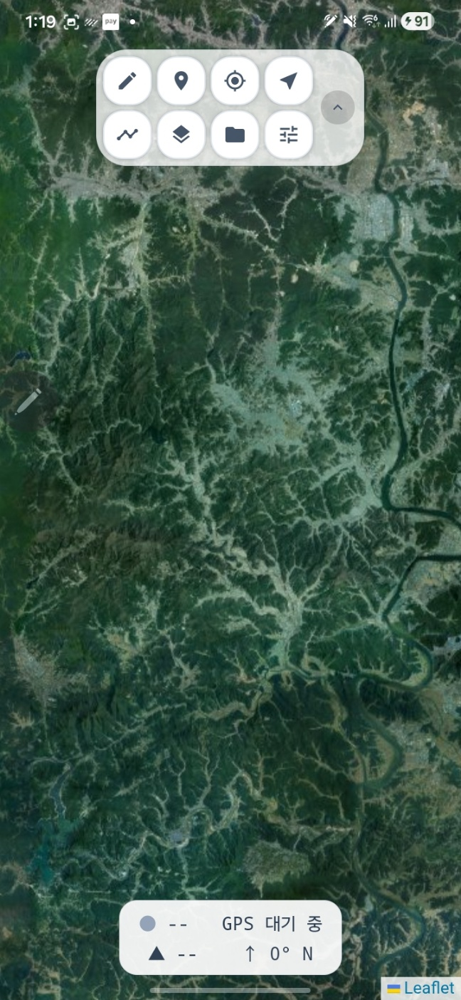
2. 화면 구성
2.1 도구 패널
화면 상단(세로 모드) 또는 오른쪽(가로 모드)의 패널에 기능 버튼 8개가 모여 있습니다. 왼쪽부터 사용 빈도 순서입니다.
| 버튼 | 이름 | 기능 |
|---|---|---|
| 펜 | 필기 도구 열기 (펜·형광펜·지우개·색상·두께) | |
| 포인트 | 조사 포인트 생성 (현재 위치 또는 지도 탭) | |
| GPS | GPS 켜기/끄기 | |
| 현위치 | 지도를 현재 위치로 이동 | |
| 트랙 | 이동 경로 기록 시작/중지 | |
| 지도 | 배경지도·오버레이 전환 | |
| 프로젝트 | 파일 불러오기·결과 저장·레이어 관리 | |
| 설정 | 언어·GPS·트랙·나침반 설정 |
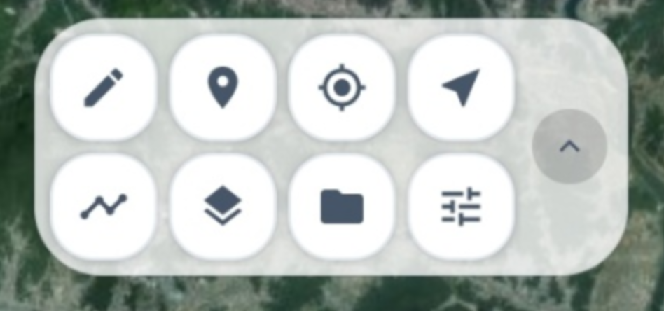
패널 끝의 화살표 핸들 을 탭하면 패널이 접히고 작은 핸들만 남습니다. 다시 탭하면 펼쳐집니다. 화살표는 패널이 움직일 방향을 가리킵니다.
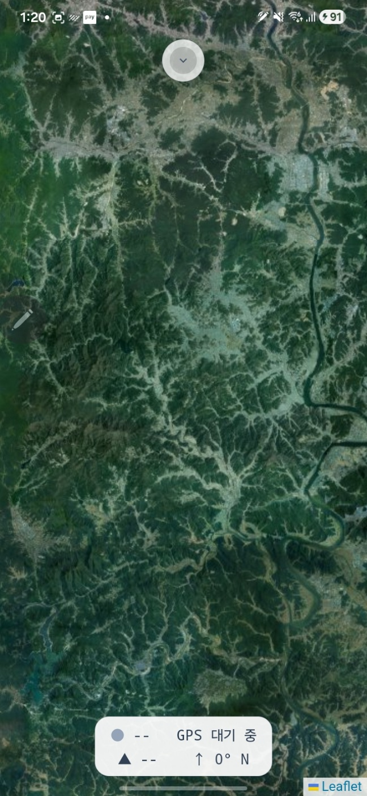
2.2 GPS 정보 카드
화면 아래의 카드는 두 줄로 현재 상태를 보여 줍니다.
- 1줄: 신호 상태 점 + 정확도(±m) + 좌표
- 2줄: ▲ 고도 + ↑ 진행 방위
| 상태 점 | 의미 |
|---|---|
| 녹색 | 정확도 5m 이내 — 양호 |
| 주황 | 정확도 15m 이내 — 보통 |
| 빨강 | 정확도 15m 초과 — 주의 |
| 회색 | GPS 신호 없음 |
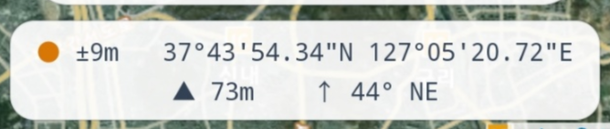
3. 지도 다루기
- 손가락 1개: 지도 이동
- 손가락 2개: 확대·축소
- S Pen: 필기 전용 (지도는 움직이지 않습니다)
3.1 배경지도 전환
- 지도 버튼을 탭합니다.
- 목록에서 원하는 지도를 선택합니다. 기본으로 VWorld 일반·위성, Google 위성이 들어 있습니다.
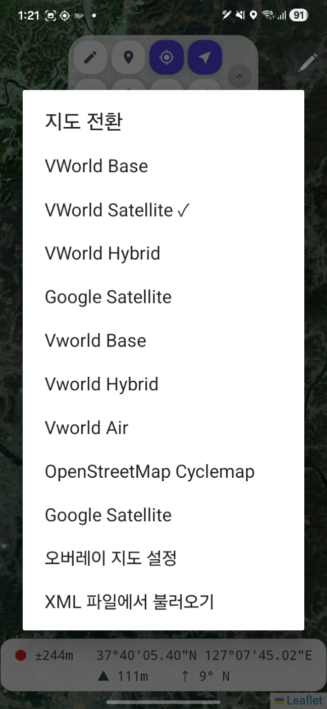
3.2 오버레이 지도
같은 메뉴의 오버레이 지도 설정에서 배경지도 위에 다른 지도를 겹쳐 표시할 수 있습니다. 예를 들어 위성영상 위에 지형도를 겹치는 식입니다.
3.3 지도 소스 추가 (XML)
기관에서 배포한 타일 지도 주소가 있다면 XML 파일에서 불러오기로 등록합니다. 한 번 등록한 소스는 앱에 저장됩니다.
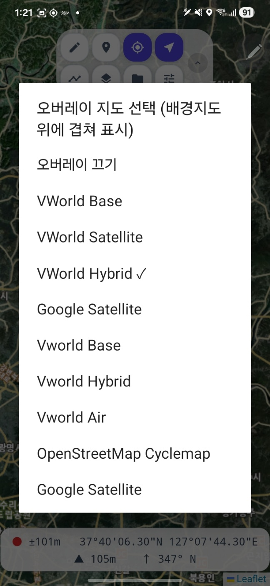
4. GIS 파일 불러오기
4.1 파일 가져오기
- 프로젝트 버튼 → GIS 파일 불러오기를 탭합니다.
- 기기의 Download 폴더 등에서 GPKG 또는 KML 파일을 선택합니다. 여러 파일을 한 번에 선택할 수 있습니다.
- 불러온 레이어는 지도에 바로 표시됩니다.
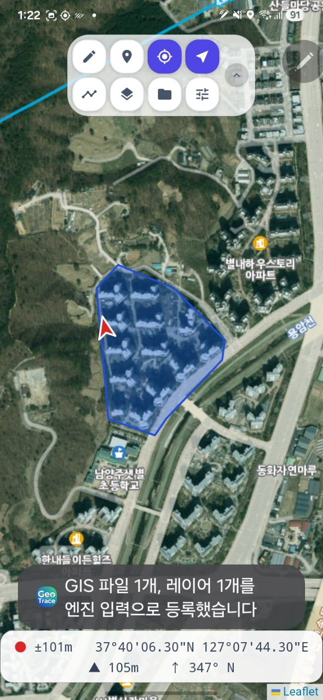
4.2 레이어 표시/숨김
프로젝트 → 레이어 표시/숨김에서 레이어별 체크박스로 켜고 끕니다.
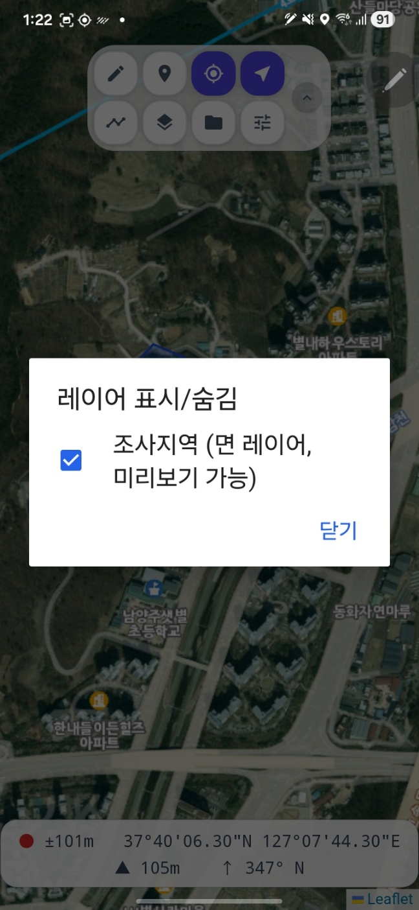
4.3 레이어 스타일 바꾸기
- 프로젝트 → GIS 레이어 심볼에서 레이어를 선택합니다.
- 색상은 팔레트에서 탭하거나, 필요하면 색상 코드를 직접 입력합니다.
- 불투명도는 슬라이더, 두께·크기는 −/＋ 버튼으로 조절합니다.
- 저장을 누르면 지도에 즉시 반영됩니다.
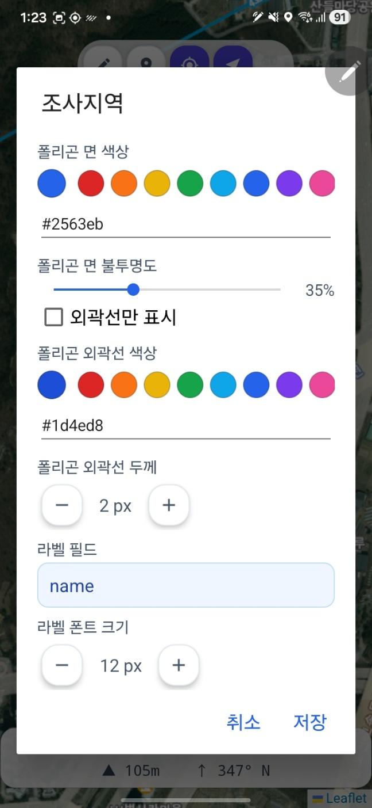
4.4 라벨 붙이기
- 스타일 편집기에서 라벨 필드 버튼을 탭합니다.
- 전체 속성 필드 목록이 열립니다. 각 필드 옆에 실제 데이터 값이 함께 표시되므로, 필드명을 몰라도 값을 보고 고를 수 있습니다.
- 라벨을 끄려면 맨 위의 (라벨 없음)을 선택합니다.
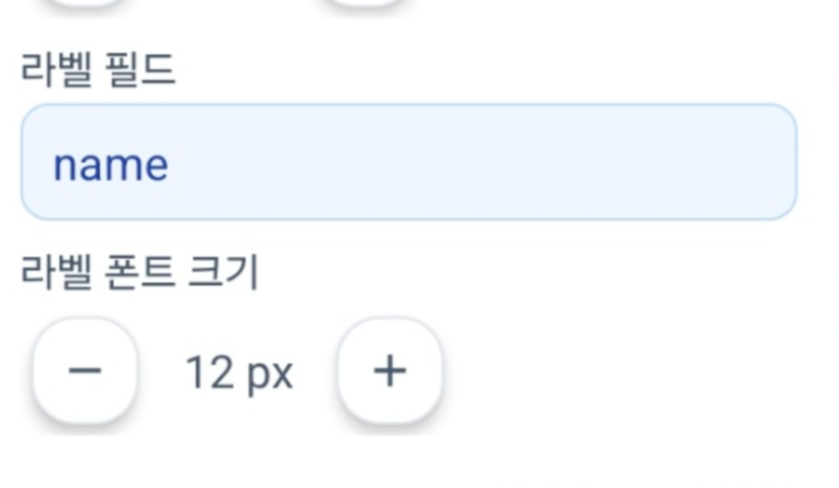
5. 현장 기록
5.1 스케치 (S Pen)
- 펜 버튼을 탭하면 아래에 필기 도구 창이 열립니다.
- 도구를 고르고 색상과 두께(−/＋)를 정합니다.
펜 · 형광펜 · 지우개 · 실행 취소 · 다시 실행 - 스타일러스로 지도 위에 그립니다. 필기는 화면이 아니라 지도 좌표에 붙기 때문에 지도를 움직이거나 확대해도 같은 자리에 남습니다.
- 실수하면 실행 취소·다시 실행을 사용합니다. 지우개는 닿은 선 전체를 지웁니다.
5.1.1 스타일러스가 없는 기기 — 손가락 필기
앱이 시작할 때 기기의 스타일러스 지원 여부를 자동으로 감지합니다.
- 스타일러스 지원 기기(S Pen, Lenovo Precision Pen, USI 펜 등): 펜으로 필기하고, 손가락은 지도 이동에 사용합니다.
- 스타일러스가 없는 기기: 손가락 필기가 자동으로 켜져, 손가락이나 일반 정전식 터치펜으로 바로 그릴 수 있습니다. 두 손가락을 대면 필기가 중단되고 지도 확대/축소로 전환됩니다.
수동 전환이 필요하면(예: 장갑을 끼고 작업할 때) 필기 도구 창의 손가락 필기 버튼으로 켜고 끌 수 있습니다.
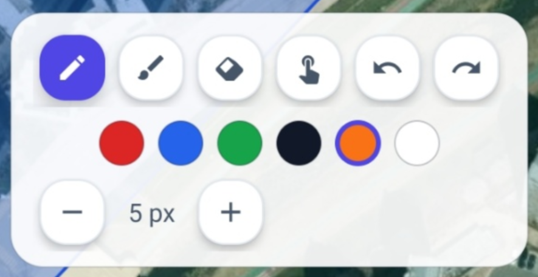
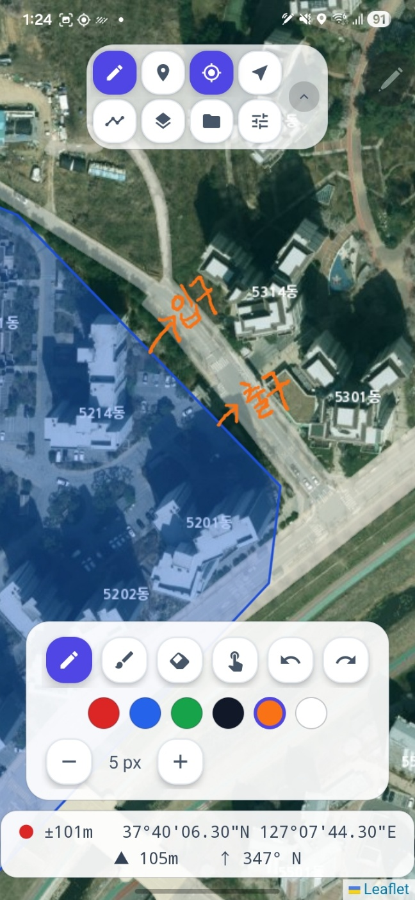
5.2 조사 포인트
- 포인트 버튼을 탭합니다.
- 현재 위치 — GPS 위치에 바로 생성하거나, 지도에서 선택 — 지도를 탭해 위치를 지정합니다.
- 이름과 설명을 입력하면 지도에 마커가 생깁니다. 생성 시간과 고도는 자동으로 저장됩니다.
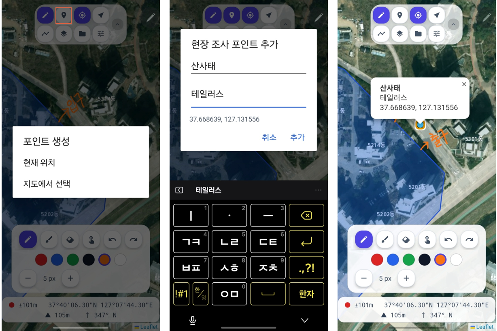
5.3 GPS와 이동 경로(트랙)
- GPS 버튼으로 GPS를 켭니다. 현재 위치가 방향 화살표로 표시됩니다.
- 트랙 버튼을 탭하면 이동 경로 기록이 시작됩니다. (GPS가 켜져 있어야 합니다)
- 다시 탭하면 기록이 멈춥니다. 기록된 경로는 자동 저장됩니다.
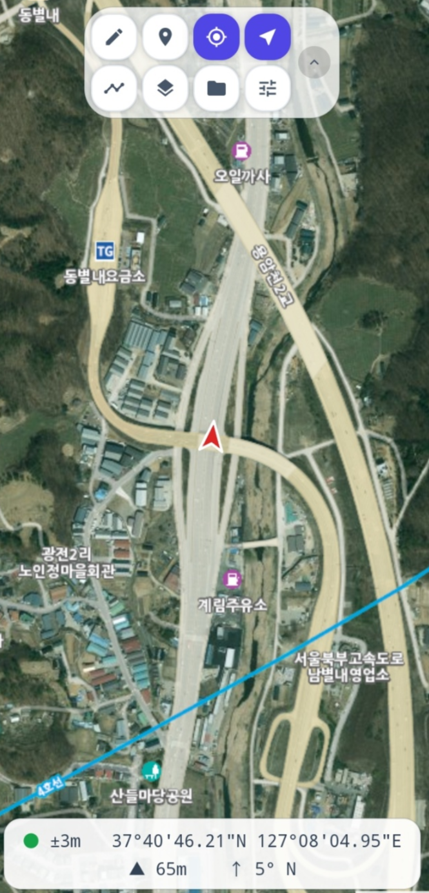

6. 설정
설정 버튼에서 다음을 조정합니다.
| 항목 | 설명 |
|---|---|
| 언어 | 한국어 / English |
| GPS 샘플링 간격 | 항상 · 1초 · 5초 · 10초. 간격이 짧을수록 경로가 정밀하지만 배터리를 더 씁니다. |
| 나침반 방위 보정 | 기기 센서 오차를 −/＋ 5° 단위로 수동 보정합니다. 아래 6.1 참조. |
| 좌표 형식 | 십진도 / 도분초. GPS 카드 탭으로도 전환됩니다. |
| 프로젝트 포인트 라벨 | 불러온 레이어의 포인트 라벨 켜기/끄기 |
| 트랙 색상·두께 | 변경하면 기록 중인 경로에도 즉시 적용됩니다. |
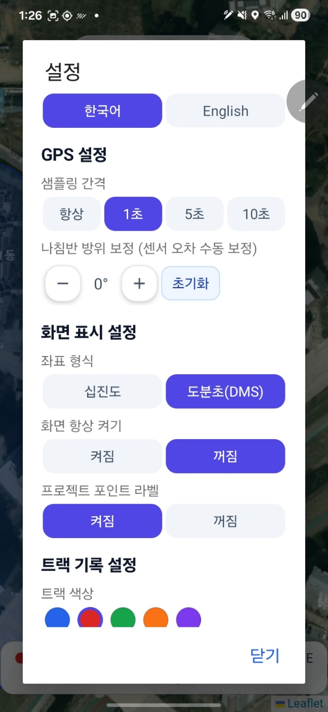
6.1 나침반 보정
정지 상태에서 위치 화살표가 실제 향하는 방향과 다르면 다음 순서로 바로잡습니다.
- 기기를 8자 모양으로 몇 번 크게 흔들어 자기 센서를 재보정합니다.
- 그래도 어긋나면 설정 → 나침반 방위 보정에서 −/＋로 오차만큼 조정합니다. 예: 동쪽을 보는데 서쪽으로 표시되면 +180°.
- 초기화 버튼으로 보정을 0°로 되돌릴 수 있습니다.
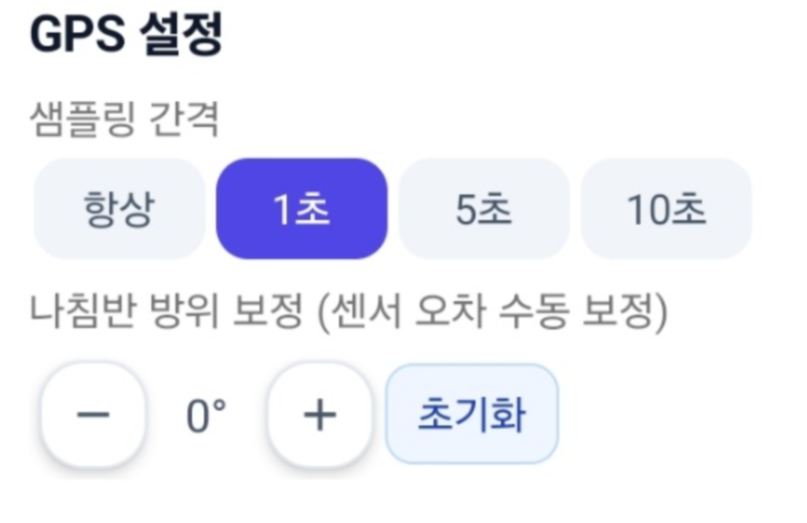
7. 결과 저장과 이어하기
7.1 결과 ZIP 저장
- 프로젝트 → 결과 저장 (ZIP)을 탭합니다.
- 저장 위치와 파일명을 정하면 ZIP 파일이 생성됩니다.
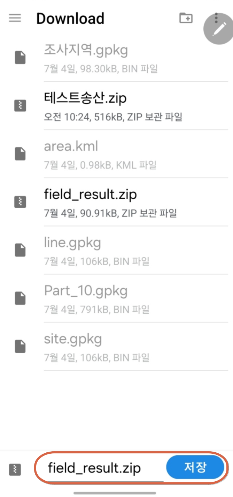
7.2 다음날 이어서 작업하기
기록은 앱 안에 자동 저장됩니다. 앱을 껐다 켜면 이전 세션 요약과 함께 이어서 진행 / 새로 시작을 묻는 창이 뜹니다.
- 이어서 진행: 포인트·경로·필기·레이어가 모두 복원된 상태로 계속 작업합니다.
- 새로 시작: 확인 절차를 거쳐 세션을 비웁니다. ZIP으로 저장하지 않은 기록은 사라지므로 주의하세요.

7.3 결과 ZIP 다시 불러오기
다른 기기에서 작업을 이어받거나 저장본을 복원할 때는 프로젝트 → 결과 ZIP 불러오기를 사용합니다. 포인트·경로·필기(원래 굵기 그대로)가 모두 지도에 복원됩니다.
8. QGIS에서 열기
ZIP의 압축을 풀면 다음 파일이 들어 있습니다.
| 파일 | 내용 |
|---|---|
field_result.gpkg | 주 결과 파일. survey_point(포인트), route_line(이동 경로), sketch_stroke(필기 벡터)를 담고 있습니다. EPSG:3857. |
sketch_overlay.png (+ pgw/aux.xml) | 필기 이미지. 좌표계 정보가 포함되어 QGIS에 끌어다 놓으면 제자리에 표시됩니다. |
survey_point.geojson 등 | 호환용 보조 파일 |
- QGIS에
field_result.gpkg를 끌어다 놓습니다. - 세 레이어를 모두 선택해 추가합니다.
- 필기를 원본 굵기 비율로 보려면 sketch_stroke 심볼에서 선 너비에
width필드를 지정합니다.
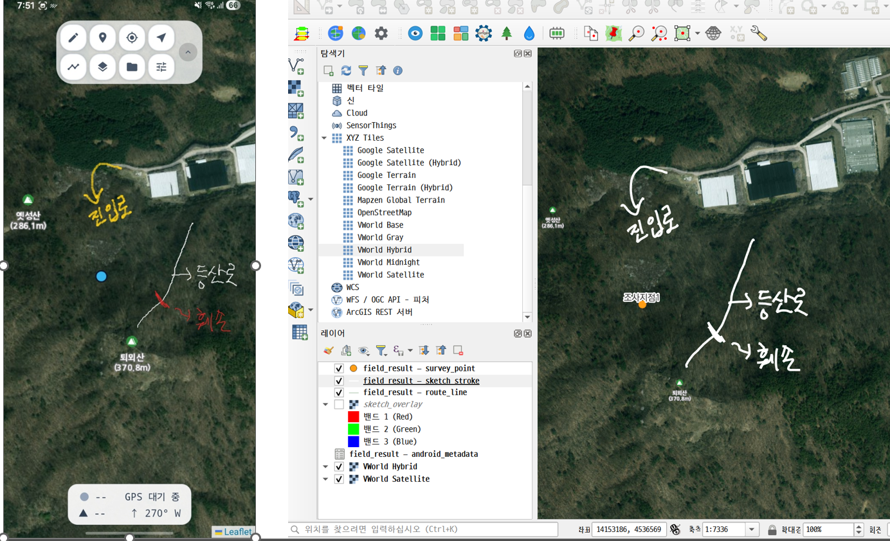
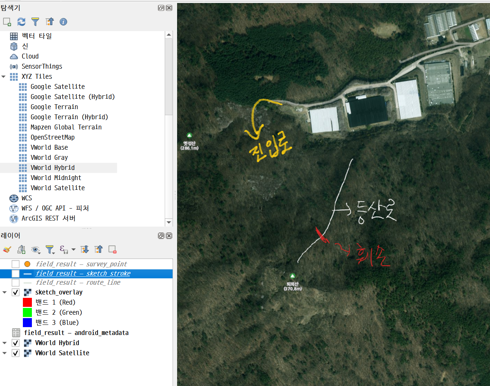
9. 문제 해결 FAQ
| 증상 | 해결 |
|---|---|
| 펜으로 그려지지 않는다 | 스타일러스가 없는 기기는 손가락 필기가 자동으로 켜집니다. 그래도 안 되면 필기 도구 창의 손가락 필기 버튼 상태를 확인하세요. 자세한 내용은 5.1.1을 참고하세요. |
| 불러온 레이어가 지도에 안 보인다 | 프로젝트 → 레이어 표시/숨김에서 체크 상태를 확인하세요. "엔진 필요"로 표시된 레이어(GeoTIFF 등)는 아직 표시를 지원하지 않습니다. |
| 위치 화살표 방향이 어긋난다 | 기기를 8자로 흔들어 센서를 재보정한 뒤, 남는 오차는 설정의 나침반 방위 보정으로 맞추세요. 걷기 시작하면 GPS 방향이 우선 적용되어 정확해집니다. |
| GPS가 잡히지 않는다 (회색 점) | 위치 권한을 확인하고, 하늘이 열린 곳에서 잠시 기다리세요. 건물 안·골짜기에서는 시간이 걸릴 수 있습니다. |
| 배경지도가 안 나온다 | 배경지도 타일은 온라인 연결이 필요합니다. 통신이 되는 곳에서 조사 지역을 미리 열어 두세요. 필기·포인트·트랙 기록은 오프라인에서도 계속 됩니다. |
| QGIS에서 필기가 화면보다 두껍다 | PNG는 저장 시점의 축척으로 굳는 이미지입니다. 정확한 굵기가 필요하면 sketch_stroke 벡터 레이어를 사용하세요. |
| 실수로 세션을 지웠다 | 마지막으로 저장한 결과 ZIP이 있다면 "결과 ZIP 불러오기"로 복원할 수 있습니다. 저장하지 않은 기록은 복구되지 않으므로, 작업을 마칠 때마다 ZIP 저장을 권합니다. |